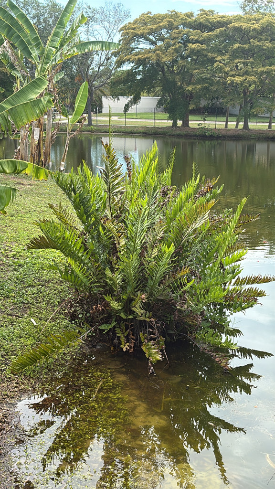

- The largest fern in Florida, and found only in Florida among the 50 states — its cold sensitivity limits it to the peninsula and the Keys.
- Fronds can reach 12 feet. The plant grows two distinct frond types: sterile fronds are green, fertile fronds are covered in brown spores on the underside and have a leathery, weathered appearance.
- The root and rhizome system is doing serious erosion work along the pond banks. The plant asks nothing in return and tolerates flooding that would kill most things.
- Three specimens at the park: two in the front pond, one in the cypress pond. None have reproduced in six years of observation.
Native to Florida, the Caribbean, Central America, and South America to Brazil. In Florida found throughout the peninsula in freshwater and brackish marshes, mangrove edges, cypress swamps, and wet hammocks. Family: Pteridaceae.
- Three Giant Leather Ferns anchor the park ponds — two in the front pond, one in the cypress pond. They are formidable plants in both size and function, leaning out over the water and holding the bank with a network of rhizomes that resists erosion effectively. In six years of observation, none have reproduced.
- People regularly want to clean them up. The fertile fronds, covered in brown spores on their undersides, look weathered compared to the clean green sterile fronds, and the temptation to trim the brown sections is understandable.
- But that brown, velvety layer isn't decay or disease — it's a dense carpet of sporangia, the plant's spore-producing structures, and a single fertile frond can release millions of microscopic spores. The practical problem is access. The plants lean away from the bank over the water. Getting to them means getting in the pond, knee-deep, with a plant that is several feet taller than you are.
- The correct management decision is to leave them alone.
- As a Florida-only fern — cold sensitivity keeps it out of every other state — it represents a genuinely regional plant. It tolerates brackish conditions well enough to grow at mangrove edges, which is unusual for a fern. The thick waxy frond texture that gives it its name is an adaptation to those conditions.
- They are self-maintaining. They do not need the park. The park needs them.
Dense colonies provide critical cover and nesting habitat for wading birds, marsh birds, and small mammals along the pond edge. The thick arching fronds create sheltered pockets at the water surface that are used by fish, turtles, and invertebrates.
The rhizome network stabilizes pond banks against erosion — a core function at both the front pond and cypress pond locations.
As a fern, it produces no nectar and supports no butterfly larvae. Its wildlife value is structural: cover, shelter, bank stabilization, and the microhabitat created by large arching fronds over still water.
No flowers, no seeds. Reproduces by spores carried on the undersides of fertile fronds. Spores are distributed uniformly across the entire underside of fertile fronds rather than in discrete clusters — this acrostichoid pattern is a defining family characteristic.
Two distinct types on the same plant. Sterile fronds are green with smooth leaflets. Fertile fronds have brown, leathery undersides covered in spores — the source of both the common name and the urge to tidy them up. Both types are normal and healthy.
Spreads by underground rhizomes forming large clumping colonies. Root system is strong and specifically adapted for shoreline stabilization.
Fronds 6 to 12 feet long in ideal conditions. Plant spread 5 to 10 feet wide. One of the largest ferns in North America.
The sheer scale is the first thing — no other fern at the park approaches this size. Look for the two frond types side by side: green sterile fronds and brown leathery fertile fronds. The plants lean over the water from the pond banks; the best view is from across the pond.
This fern isn't eaten, but it's harmless — not toxic to people, dogs, or cats.

- © Randall Carter (CC-BY-NC), via iNaturalist